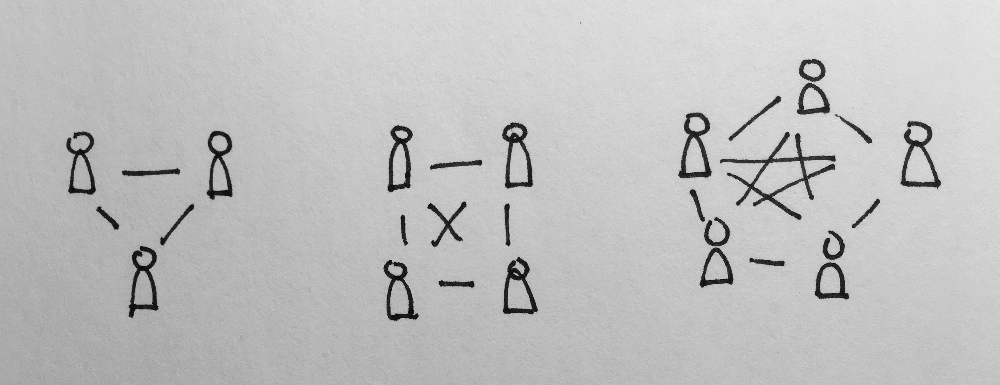

← Home
The birthday problem is as follows:
How many people must be in the same room to make it likely that somebody shares a birthday?1
We’ll capture this problem as Pb(n) = P(two or more people in room with n-many people, share a birthday).
Out the gate, let’s take the complement of Pb(n):
Pb(n) = 1 - P(no people share a birthday) = 1 - Pnb(n)
Although Pb(n) appears innocuous, a direct calculation presents a tall hurdle. With either, there’ll be some component representing the available birthdays, whose denominator initially containing 365. With Pb(n) though, as the population grows, the available pool of birthdays dwindles. This property will make directly finding an equation more difficult. Instead, we can side-step this hurdle, by working towards a Pnb(n) equation.
nAs an exercise in discovery, let’s calculate the odds for small numbers of people:
Pnb(1) = 0
Pnb(2) = odds that second person's birthday is different from first
= 364/365
Pnb(3) = odds that neither persons A and B, nor A and C, nor B and C share birthday
= 364/365 * 364/365 * 364/365
= (364/365)^3
Pnb(4) = odds that none of these pairs of people share a birthday:
= (364/365)^6
Quickly, we see that calculating the probability will depend on counting the number of pairs of people in the room. Let’s reframe Pnb(n):
Pnb(n) = odds that none of the pairs of people share a birthday
= 364/365^(number of pairs of people)
This presents a sub-problem that we can tackle in isolation, and recombine afterwards:
Given
npeople, how many distinct pairs are there?
Drawing three people, with a line between each pair of people, we find there are thee pairs. With four people, there’s six pairs. Five people, ten pairs.

This is very similar to counting from 1 to n, except that n in this problem, is one greater the input to that problem’s equation. Here’s an adjusted formula for this problem:
Number of pairs = 1/2*(n-1)*n
| People | Pairs | 1/2*(n-1)*n |
|---|---|---|
| 1 | 0 | 1/2*(1-1)*1 = 0 ✓ |
| 2 | 1 | 1/2*(2-1)*2 = 1 ✓ |
| 3 | 3 | 1/2*(3-1)*3 = 3 ✓ |
| 4 | 6 | 1/2*(4-1)*4 = 6 ✓ |
| 5 | 10 | 1/2*(5-1)*5 = 10 ✓ |
Going back to the calculating Pnb(n), we can replace “number of pairs of people” with 1/2*(n-1)*n, giving us:
Pnb(n) = (364/365)^(1/2*(n-1)*n)
Now we have an equation whose only variable is n. We’d like to know what value of n is sufficient to make Pb(n) >= 1/2. Rephrasing:
Pb(n) >= 1/2
1 - Pnb(n) >= 1/2
1 - (364/365)^(1/2*(n-1)*n) >= 1/2
1 - 1/2 >= (364/365)^(1/2*(n-1)*n)
1/2 >= (364/365)^(1/2*(n-1)*n)
At this point, there at least two paths to proceed along:
nn satisfying the inequalityConsidering the first path, the equation would involve logarithm (due to the exponentiation), and the quadratic equation (due to the n^2 term). Together, that sounds more involved than guessing and checking.
I’ll take 182 as my first guess, since it’s half of 365 2.
(364/365)^(1/2*(n-1)*n) = (364/365)^(1/2*(182-1)*182) ~= 0.00000000000000000002372
This is far smaller than 1/2, so we’re not close yet. Looking at the equation, we can find what direction to go: if I increase my guess, then the power of 364/365 increases, which will make the value smaller. We need a higher value, to begin approaching 1/2, so we need a smaller guess. I’ll try 30.
(364/365)^(1/2*(n-1)*n) = (364/365)^(1/2*(30-1)*30) ~= 0.3032
Much closer to 1/2. Let’s build a table with our guesses, cataloging the search:
| People | Odds | Verdict |
|---|---|---|
182 |
(364/365)^(1/2*182*(182-1)) ~= 0.00000000000000000002372 |
Way too large a guess |
30 |
(364/365)^(1/2*30*(30-1)) ~= 0.3032 |
Closer |
15 |
(364/365)^(1/2*15*(15-1)) ~= 0.7497 |
Overshot 1/2 |
22 |
(364/365)^(1/2*22*(22-1)) ~= 0.5306 |
Just slightly over |
23 |
(364/365)^(1/2*23*(23-1)) ~= 0.4995 |
Precisely enough people |
This is surprising! We need only 23 people in the room, to make it likely that someone will share a birthday.
Why is this such a small number? Let’s reflect on the equation: 364/365^(1/2*(n-1)*n). 364/365 is marginally less than one, and continues to get shrink as the exponent’s power grows. The power is 1/2*(n-1)*n = 1/2*(n^2 - n). In particular, n^2 grows much quicker than n. Imagine the area of a square, and how quickly its area grows as both its sides, n, increase. We need only 23 people, far less than 182, because number of pairs of people grows this quickly.
P >= 1/2. The formulation of this question is tricky. We can’t say “likely that two people share a birthday”, because that’s overly restrictive: it’s okay if three people share a birthday.
[return]1/2, so it makes sense to try half of 365. The sole input to Pnb(n), aka n, is in units “people”, so chosing a value related to days in a year is off base.
[return]